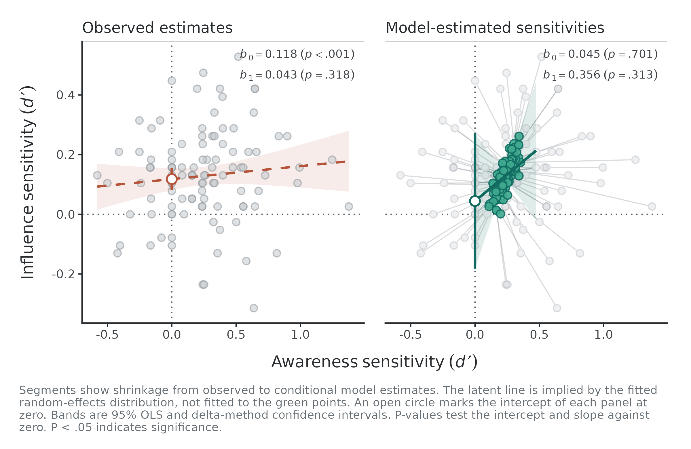
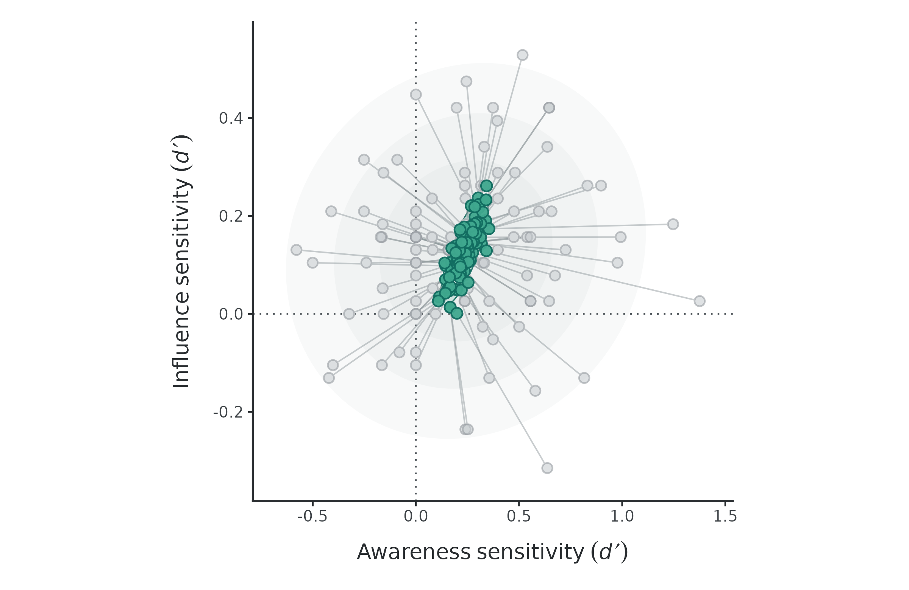
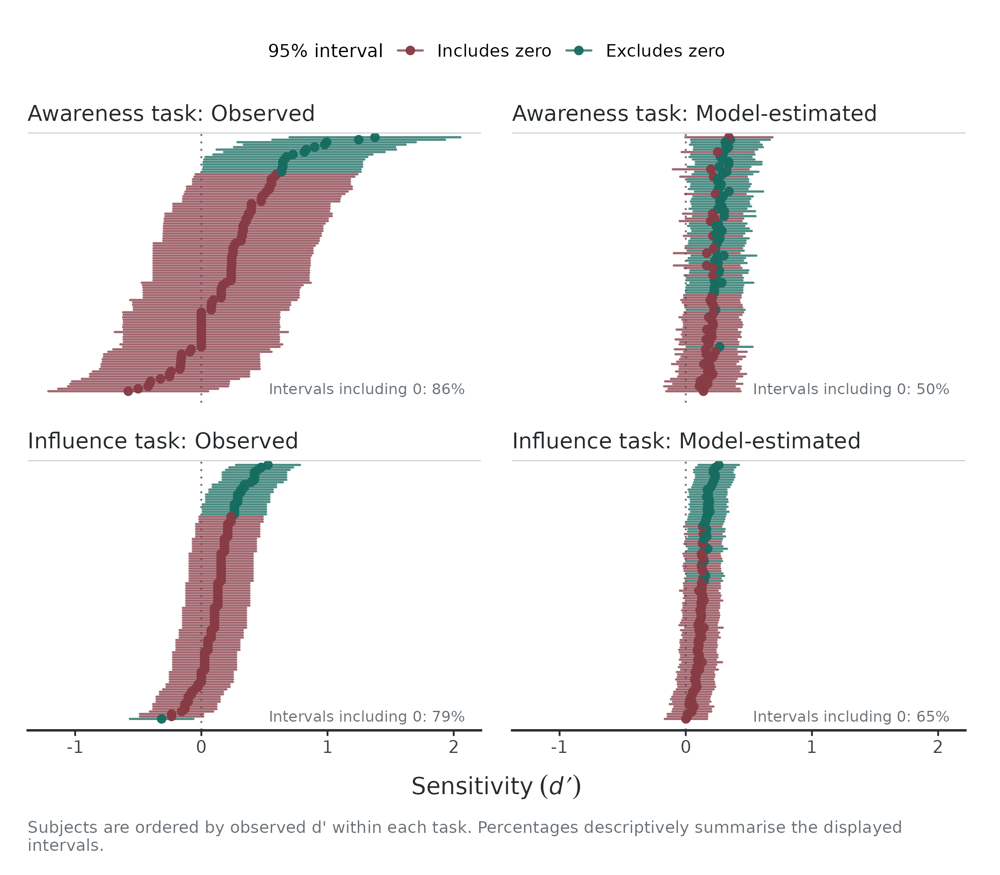
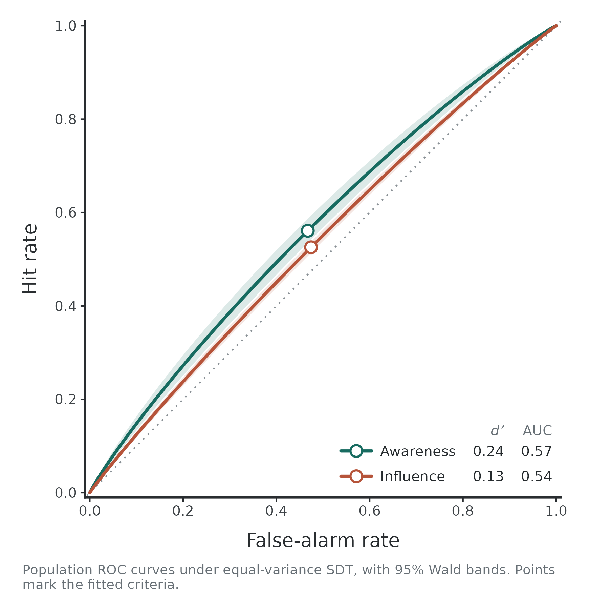
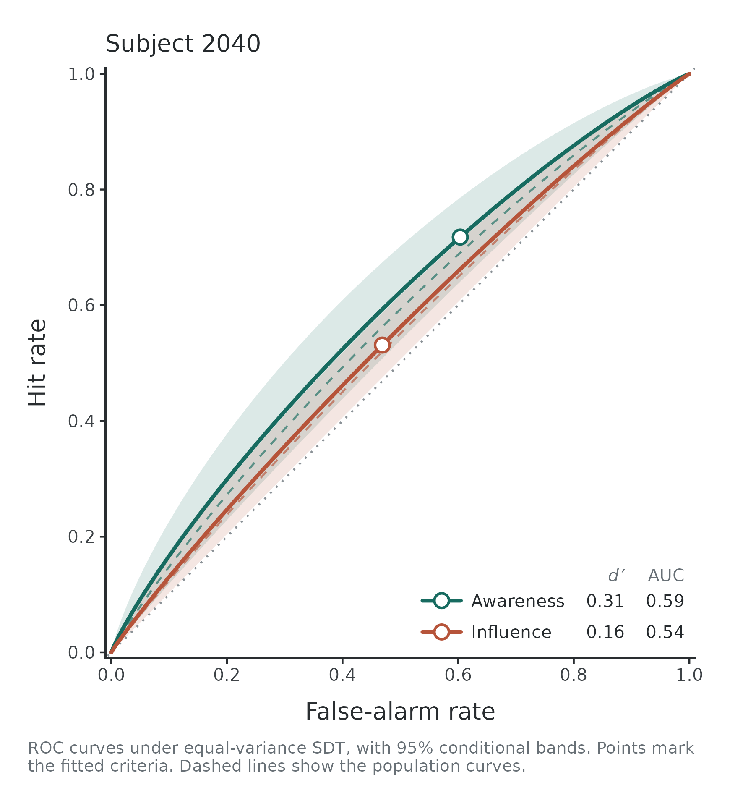

What is uSDT for?
uSDT models paired awareness and influence measures from the same participants. It estimates their mean sensitivities, between-subject variation and latent association. The latent regression estimates influence sensitivity at zero awareness sensitivity. Interpreting this as unconscious processing requires a suitable model and an adequate awareness measure.
Prepare the data with usdt_data_tasks(), fit with
hsdt(), then inspect the tests, plots and reliability.
The data
The package includes Experiment 2 of Vadillo, Malejka, and Shanks
(2025). vadillo_awareness contains old/new recognition
judgements. vadillo_cuing contains search response times.
Contextual cuing predicts faster responses to repeated
(old) displays.
head(vadillo_awareness) subj file trial pattId judgm judged.old condition offset
1 2001 y109b_subj1051.mat 1 1001 1 0 old no offset
2 2001 y109b_subj1051.mat 2 1002 5 1 old no offset
3 2001 y109b_subj1051.mat 3 3005 4 1 new offset
4 2001 y109b_subj1051.mat 4 3006 5 1 new offset
5 2001 y109b_subj1051.mat 5 3001 2 0 new no offset
6 2001 y109b_subj1051.mat 6 1006 4 1 old offset
color set.size
1 color set size 8
2 b/w set size 8
3 color set size 8
4 b/w set size 8
5 color set size 8
6 b/w set size 8
head(vadillo_cuing) experiment subj file trial block epoch pattId acc rt
1 Experiment 2 2001 y109b_subj1051.mat 1 1 1 2001 1 1305.352
2 Experiment 2 2001 y109b_subj1051.mat 2 1 1 1008 1 4027.887
3 Experiment 2 2001 y109b_subj1051.mat 3 1 1 1007 1 2484.210
4 Experiment 2 2001 y109b_subj1051.mat 4 1 1 2006 1 1771.315
5 Experiment 2 2001 y109b_subj1051.mat 5 1 1 1001 1 926.236
6 Experiment 2 2001 y109b_subj1051.mat 6 1 1 1006 1 1194.542
condition offset color set.size
1 new no offset color set size 8
2 old offset b/w set size 16
3 old offset color set size 16
4 new offset b/w set size 8
5 old no offset color set size 8
6 old offset b/w set size 8Subject IDs link participants across tasks. Individual trials need not be paired. Column names and condition labels may differ between tasks.
This example uses all supplied trials, including search errors, across blocks and display conditions. It demonstrates the package workflow using the source data. Define exclusions and select the relevant trials before dichotomizing. The package does not remove errors or RT outliers automatically.
Preparing the data
usdt_data_tasks()
takes one data frame per task. Give shared arguments once and
task-specific arguments as
list(awareness = ..., influence = ...).
data_usdt <- usdt_data_tasks(
awareness = vadillo_awareness,
influence = vadillo_cuing,
subject_col = "subj",
condition_col = "condition",
condition_levels = c(signal = "old", noise = "new"),
response_col = list(awareness = "judged.old", influence = "rt"),
response_levels = list(
awareness = c(signal = 1, noise = 0),
influence = c(signal = "faster", noise = "slower")
),
dichotomize = list(awareness = FALSE, influence = TRUE)
)The median split is computed within subject, pooling conditions (Meyen et al., 2022). RTs below the median become signal responses. Ties become noise responses by default. A hit is an old display searched faster than the median. A false alarm is a new display searched faster than the median. The resulting d' measures discrimination by this binary classifier.
With balanced signal/noise trials and an exact half split, the
classical criterion is zero under the default deviation coding. Ties,
odd trial counts or unequal condition counts can change this.
hsdt() fixes a dichotomized task’s criterion to zero when
its mean absolute subject criterion is below 0.02.
fix_criteria = "none" estimates all criteria.
coding = "deviation" codes signal/noise as +0.5/-0.5, so the probit intercept is -c. Treatment coding uses 1/0, giving the intercept z(FAR)=-\lambda, where \lambda=c+d'/2. Both define sensitivity
as d'=z(HR)-z(FAR). They specify
different random-effects models when criteria and sensitivities are
constrained to independent blocks, so fitted sensitivities need not be
identical.
data_usdt── Data summary ────────────────────────────────────────────────────────────────
Input: 2 data frames (usdt_data_tasks)
Subjects: 104 (104 in both tasks, 0 in one only)
Trials: 46,592 -> 416 aggregated rows (4 per subject)
Coding: deviation (condition coded -0.5 / +0.5; intercept estimates -c)
Parameters: 7 (3 fixed effects, 4 (co)variance components)
── Variable mapping ────────────────────────────────────────────────────────────
Variable Task Column Signal Noise
subject Awareness subj - -
Influence subj - -
condition Awareness condition old new
Influence condition old new
response Awareness judged.old 1 0
Influence rt faster slower [Meyen split]
── Descriptives: median [min, max] across subjects ─────────────────────────────
Task Trials/cell HR FAR d' (method-of-moments)
Awareness 32 .56 [ .28, .88] .47 [ .12, .78] 0.24 [-0.58, 1.38]
Influence 192 .53 [ .44, .60] .47 [ .40, .56] 0.13 [-0.31, 0.53]
No cells at floor or ceiling.Check subject overlap, role mappings, trial counts and extreme rates. The model uses two binomial rows per task and subject (signal and noise), four rows per subject here. Extreme rates are fitted directly. Descriptive d' values use the Hautus correction where needed.
For a single long-format frame, use usdt_data_long()
with task_col and
task_levels = c(awareness = "A", influence = "I").
Fitting the model
hsdt() fits a
binomial probit mixed model by maximum likelihood with the Laplace
approximation in lme4.
── Model summary ───────────────────────────────────────────────────────────────
Subjects: 104
Observations: 416 aggregated rows (46,592 trials)
Family: binomial (probit)
Coding: deviation
Criteria: Awareness estimated, Influence fixed to 0 (Meyen split, mean |c| = 0.0000)
Estimation: lme4::glmer (Nelder_Mead), tried bobyqa -> Nelder_Mead
Convergence: TRUE
── Fixed effects ───────────────────────────────────────────────────────────────
Parameter Task Estimate SE 95% CI z p-value
criterion Awareness -0.0357 0.0289 [ -0.092, 0.021] -1.24 .215
d' Awareness 0.2354 0.0335 [ 0.170, 0.301] 7.03 <.001
d' Influence 0.1283 0.0153 [ 0.098, 0.158] 8.41 <.001
── Random effects ──────────────────────────────────────────────────────────────
Parameter Task Estimate SE 95% CI
sd(criterion) Awareness 0.2473 0.0246 [ 0.204, 0.301]
sd(d') Awareness 0.1219 0.0666 [ 0.042, 0.356]
sd(d') Influence 0.0883 0.0190 [ 0.058, 0.135]
cor(d') both 0.4910 0.5188 [ -0.665, 0.954]
── Hypotheses ──────────────────────────────────────────────────────────────────
H1: Group-level sensitivity difference (Δd' = Influence d' - Awareness d')
Parameter Estimate SE 95% CI z p-value
Δd' (I - A) -0.1071 0.0354 [ -0.176, -0.038] -3.03 .002
H2: Correlation between sensitivities across tasks
Parameter Estimate SE 95% CI z p-value
rho 0.4910 0.5188 [ -0.665, 0.954] 1.01 .313
H3: Latent regression of Influence d' on Awareness d'
Parameter Estimate SE 95% CI z p-value
Intercept 0.0445 0.1159 [ -0.183, 0.272] 0.38 .701
Slope 0.3558 0.4865 [ -0.598, 1.309] 1.01 .313
── Notes ───────────────────────────────────────────────────────────────────────
Use usdt_boot(fit, nsim = 1000, ncores = 4) for bootstrap CIs.Fixed sensitivity effects are task means. Random effects describe
subject departures. sd(d') measures between-subject
variation and cor(d') the latent correlation. Subject
estimates combine the fixed effects with conditional random-effect
modes. Inspect convergence and singularity before interpreting the
tests.
The three hypotheses
The default tests are two-sided against zero, without multiplicity adjustment.
- H1, mean difference: \Delta d'=\mu_I-\mu_A (influence minus awareness). Here it is -0.11, 95% CI [-0.18, -0.04]. The interval is below zero, favouring awareness sensitivity. An influence advantage would require a positive difference. Its interpretation also depends on how the tasks measure conscious information.
- H2, latent correlation: \rho= 0.49, 95% CI [-0.67, 0.95]. This describes the association between latent subject sensitivities. The wide interval provides little precision. A nonsignificant test does not establish independence.
- H3, latent regression: the slope is 0.36 and the intercept is 0.04, 95% CI [-0.18, 0.27]. The intercept is expected influence sensitivity at latent awareness sensitivity zero, not the mean of participants selected for low observed scores. Its interval includes zero, leaving both zero and positive influence sensitivity compatible with these data.
Writing the awareness variance as \tau_A^2 and the covariance as \tau_{AI},
E(d'_I\mid d'_A=x)=\beta_0+\beta_1 x,\qquad \beta_1=\tau_{AI}/\tau_A^2,\qquad \beta_0=\mu_I-\beta_1\mu_A.
A positive intercept requires an adequate awareness measure and a suitable latent model to support an unconscious-processing interpretation. It may involve extrapolation to zero. The analytical tests of H2 and the H3 slope share a covariance test, so they provide the same test of association.
Equivalence and one-sided tests
usdt_equivalence()
tests specified bounds. Choose them from theory or previous studies.
These only illustrate the syntax.
usdt_equivalence(fit_uSDT, c("diff in [-0.2, 0.2]", "intercept < 0.2",
"rho in [-0.3, 0.3]")) uSDT hypothesis ─ Equivalence test (TOST)
════════════════════════════════════════════════════════════════════════════════
Hypothesis (H1) : Δd' in [-0.2, 0.2]
Hypothesis (H0) : Δd' out [-0.2, 0.2]
Estimate : -0.107
Standard error : 0.035
90% CI, Wald : [-0.165, -0.049]
p-value, lower bound : .004
p-value, upper bound : <.001
p-value : .004
Decision (alpha = 0.05) : H0 rejected, in favour of H1
────────────────────────────────────────────────────────────────────────────────
uSDT hypothesis ─ One-sided test
════════════════════════════════════════════════════════════════════════════════
Hypothesis (H1) : intercept < 0.2
Hypothesis (H0) : intercept >= 0.2
Estimate : 0.045
Standard error : 0.116
90% CI, Wald : [-0.146, 0.235]
p-value : .090
Decision (alpha = 0.05) : H0 not rejected
────────────────────────────────────────────────────────────────────────────────
uSDT hypothesis ─ Equivalence test (TOST)
════════════════════════════════════════════════════════════════════════════════
Hypothesis (H1) : rho in [-0.3, 0.3]
Hypothesis (H0) : rho out [-0.3, 0.3]
Estimate : 0.491
Standard error : 0.519
90% CI, Fisher-z : [-0.528, 0.930]
p-value, lower bound : .108
p-value, upper bound : .631
p-value : .631
Decision (alpha = 0.05) : H0 not rejected
────────────────────────────────────────────────────────────────────────────────At \alpha=.05, equivalence and
one-sided tests report 90% intervals. Here the sensitivity difference is
equivalent within \pm0.2 despite being
different from zero. The intercept and correlation tests do not
establish their proposed bounds. Correlation tests use the Fisher-z scale, so their p-values can differ from
the covariance test in usdt_tests().
Reliability of individual differences
usdt_reliability()
estimates \tau^2/(\tau^2+\overline v)
for each task: between-subject sensitivity variance divided by total
variance, with measurement variance \overline
v from binomial-probit information at the fitted
probabilities.
reliability <- usdt_reliability(fit_uSDT)
reliability── Reliability summary ─────────────────────────────────────────────────────────
Task Subjects Group-level estimate By-subject estimate median [min, max]
Awareness 104 .129 .130 [.119, .131]
Influence 104 .323 .323 [.322, .323]Reliability is about .13 for awareness and .32 for influence. Low reliability can reflect little between-subject variation, substantial trial noise, or both. It limits precision for individual differences even when the mean effect is clear. The latent model accounts for trial noise under its assumptions. It does not guarantee unbiased or precise estimates in every sample.
head(reliability$subjects) task subj dprime variance reliability
1 Awareness 2001 0.2707158 0.09899329 0.1305303
2 Awareness 2002 0.2485344 0.10427183 0.1247468
3 Awareness 2003 0.2172227 0.10017561 0.1291888
4 Awareness 2004 0.3175901 0.09908306 0.1304275
5 Awareness 2005 0.1444059 0.10037191 0.1289687
6 Awareness 2006 0.1733233 0.09926175 0.1302232Visualizing the model
Latent regression and shrinkage
plot(fit_uSDT)
The left panel regresses observed influence d' on observed awareness d'. Measurement error in the predictor can flatten the slope. The right panel draws the latent regression implied by the fitted covariance, with segments connecting observed pairs to their conditional model estimates. The line is not fitted through those partially pooled points. Its band is a pointwise confidence interval for the regression mean.
Use nrow = 2 to stack the panels and
caption = FALSE to hide the caption. The shrinkage plot
isolates the movement of the subject estimates:
plot(fit_uSDT, type = "shrinkage")
Subject intervals
plot(fit_uSDT, type = "caterpillar")
Observed intervals use Miller standard errors and a normal approximation. Model intervals include uncertainty in the means, variance components and subject effects when the joint covariance is available. The percentages describe intervals containing zero. They do not classify participants as aware or unaware.
ROC curves
plot(fit_uSDT, type = "roc")
These equal-variance SDT curves describe a subject whose random effects are set to zero. Points mark fitted criteria and bands transform the sensitivity intervals. Binary responses identify one operating point per task. The full curves follow from the model.
plot(fit_uSDT, type = "roc", subject_id = 2040)
Subject curves use partially pooled estimates, with population curves dashed behind them. Their bands condition on the fitted population parameters.
Further analyses
usdt_boot()
adds parametric bootstrap inference to a frequentist fit:
fit_boot <- usdt_boot(fit_uSDT, nsim = 1000, ncores = 4, seed = 2026)
summary(fit_boot)
fit_boot$testsAt least 500 usable replicates are required before bootstrap
inference replaces the analytical results. Converged boundary refits are
retained when all hypothesis estimates are finite. Inspect failures and
retained boundary counts in fit_boot$boot. The bootstrap
simulates binary responses at the original cell sizes. It does not
repeat the RT median split or resolve a lack of information in the
design. Read the returned $tests table to retain bootstrap
results. usdt_tests() recomputes analytical tests.
Bayesian estimation covers priors,
posterior summaries and Bayes factors with
hsdt(estimation = "bayesian"). Planning a study covers power, sample sizes
and detectable effects. For covariates, see the custom lme4 and brms
examples in usdt_tests().
References
Meyen, S., Zerweck, I. A., Amado, C., von Luxburg, U., & Franz, V. H. (2022). Advancing research on unconscious priming: When can scientists claim an indirect task advantage? Journal of Experimental Psychology: General, 151(1), 65-81. https://doi.org/10.1037/xge0001065
Vadillo, M. A., Malejka, S., & Shanks, D. R. (2025). Mapping the reliability multiverse of contextual cuing. Journal of Experimental Psychology: Learning, Memory, and Cognition, 51(6), 910-927. https://doi.org/10.1037/xlm0001410